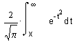

erf(x) Returns the error function,
erfc(x) Returns the complementary error function,

The error function is related to the complementary error function by the following relation: erfc(x) = 1 − erf(x).